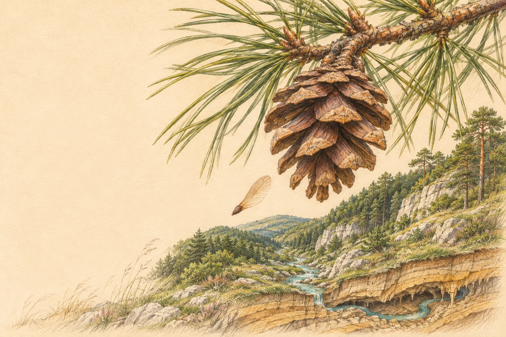
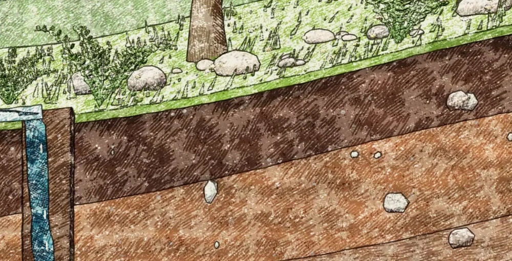

Colored-pencil science illustration
Field Notes
A creek slips underground. A pine cone lets a seed go. Two natural history films seen from the tip of a colored pencil.
Watch the films
The film journal
English narration & captions
The film could not load. Open the MP4 below to play it directly.
English transcript
Follow a vanishing creek through limestone to the spring where its water returns.
A pencil study
Under the lens

Music & field recordings
Listen to
the woods
Each film has its own instrumental generated in Google Gemini’s Create music. The streams, rainfall and pencil strokes come from separately edited recordings.
Limestone Morning
The recording could not load. Select the track to retry.
Music prompt & edit times
The next page
Draw a field note of your own
Start with a change you can see. Find a landmark that stays recognizable in the landscape and the cutaway, then follow it with the camera.
Make a film in this style
Drawing method & blank starter
Art, music & recording credits
The cover was drawn with ImageGen for this double feature. The two films and cutaways are by Codex Film Studio. Narration uses Kokoro af_heart. Music was generated in Google Gemini.
The pencil renderer adapts MIT-licensed work by Lemomo (LemoLab). Style reference ↗
These recordings were edited, equalized, panned and mixed.